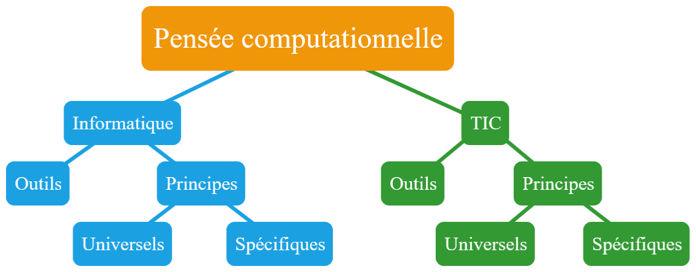
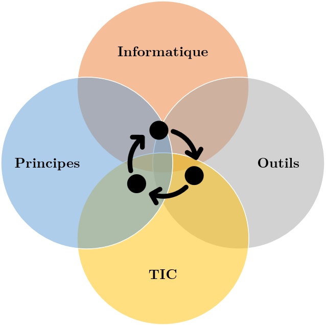
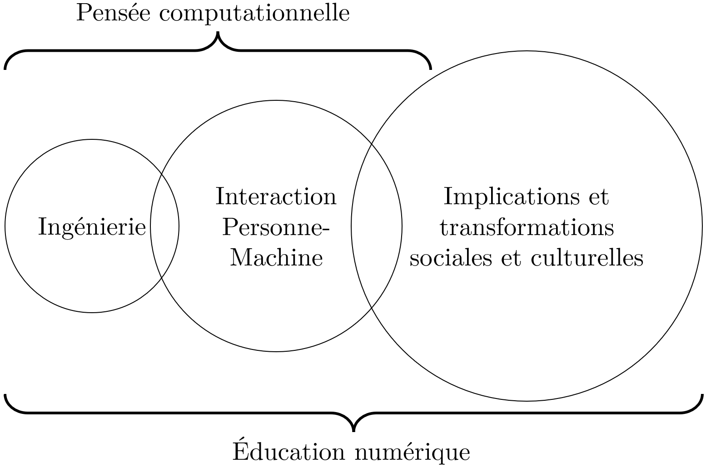
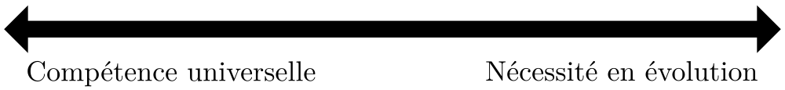
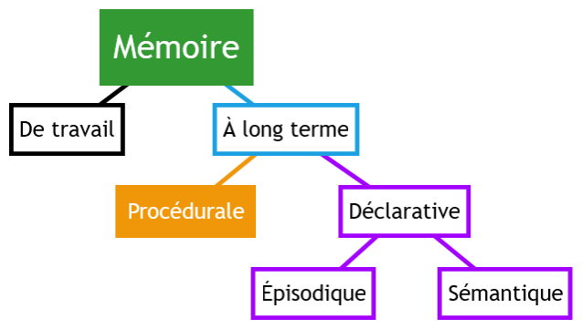
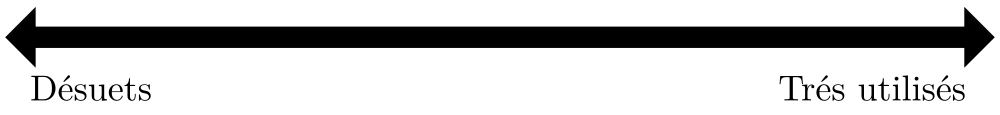

Introduction à la pensée computationnelle (CO)
Mattia A. Fritz
TECFA, Université de Genève
Plan de la présentation
- Perspective adoptée
- Qu'est-ce que la pensée computationnelle ?
- Approches pour enseigner la pensée computationnelle
- Enjeux et difficultés
Perspective adoptée
Sujet qui crée du débat
Faut-il obliger les enfants à suivre des cours de programmation informatique à l'école ?
Débat dans l'émission Forum, © RTS 2016
Approche dichotomique
Tendance à polariser, par exemple informatique vs. TIC.
Approche integrative
On peut voir une influence mutuelle entre éléments.
Lien avec l'éducation numérique
La pensée computationnelle est une composante de l'éducation numérique, mais dont l'étendu dans la sphère sociale est plus limitée, quoi que fondamentale !
Exemple du thumbs-up/down
Différents niveaux d'analyse pour une fonctionnalité.
Ingénierie
| post_id | thumb |
|---|---|
| 6272 | 0 |
| 6272 | 1 |
| 6272 | 1 |
| 6272 | 0 |
Interaction
Un simple clique...
Implications
- Désirabilité
- Exclusion
- Depression
- ...
Qu'est-ce que la pensée computationnelle
Contextualiser avec exemple
Frère Luc est l'intendant de l'abbaye. Très économe, il réutilise les bouts de cierges usagés pour en faire de nouveaux. Il est capable de reconstituer un cierge à partir de trois bouts de cierges qu'il fait fondre.
Combien pourra-t-il reconstituer de cierges avec les neuf bouts de cierges qu'il a récupérés ce matin dans l'abbatiale ?
Solution cognitive
- Avec 9 bouts, il peut reconstituer 3 cierges.
- En brûlant les 3 cierges, il récupère 3 nouveaux bouts.
- Avec ces 3 bouts supplémentaire, il peut reconstituer 1 nouveau cierge (récursivité).
Au total, il récupère 4 cierges !
Solution computationnelle
Implémentation en code JavaScript.
//Set the initial number of pieces available
var numberOfPieces = 9;
//How many pieces are needed for a candle?
var piecesRequired = 3;
//Set a variable to be incremented for each new candle
var totalCandlesObtained = 0;
//Go on until the number of candles can be divided by the pieces
while (numberOfPieces / piecesRequired >= 1) {
//At each cycle define the new number of candles
numberOfPieces = Math.floor(numberOfPieces / piecesRequired);
//Add it to the previous total
totalCandlesObtained += numberOfPieces;
}
//Print the result
console.log('TOTAL:' + totalCandlesObtained + ' candles');
Récursivité
Généralisation du code
Au total, il obtient {{totalCandles}} cierges.
Connaître la récursivité dans le codage facilite la résolution cognitive du problème ?
Pensée computationnelle est ?
Dans la littérature scientifique, les différentes définitions de la pensée computationnelle peuvent être placées sur un continuum entre deux pôles opposés :
Capacités
Individuelles
Interaction
Personne-Machine
Processus universel
— Wing 2006, p. 33
Traduction libre
Processus universel
— Aho 2012, p. 832
Traduction libre
Processus délimité
— Denning et al., 1989, p. 12
Traduction libre
Processus délimité
— Denning, 2016, p. 33
Traduction libre
Troisième dimension sociale

Processus émergent
— Fritz, 2019
Définition provisoire
Mouvement bi-directionnel
L'informatique s'oriente vers les sciences sociales, et les sciences sociales utilisent de plus en plus l'informatique.
Informatique
Sciences sociales
Informatique : science sociale ?
— Connolly, 2020
Traduction libre
Informatique : science sociale ?
Définition pragmatique
— Fritz & Schneider, 2019
Composantes principales

Composantes
-
Décomposition
Diviser un problème complexe ou un système en petites parties plus simples à gérer. -
Reconnaissance de pattern
Identifier des similarités entre problèmes ou à l’intérieur du même problème donné. -
Abstraction
Se focaliser exclusivement sur les parties importantes du problème. -
Algorithmes
Trouver une solution à travers une règle composée par une série d’étapes.
Mais...
Il est nécessaire de combiner les connaissances déclaratives avec des connaissances procédurales.
Comment enseigner la pensée computationnelle
Trois approches principales
Il existe principalement trois modalités d'enseignement de la pensée computationnelle qui peuvent être combinées :
- Activités débranchées
- Environnements avec blocs de code
- Langages de programmation textuels
Plus de recherche nécessaire sur bénéfices et transfert entre
différentes modalités.
Activités débranchées
Activités qui n'utilisent pas un dispositif numérique, mais une modélisation abstraite du fonctionnement.

Programming Boty de L. Boufflers et S. Linh Quang.
Exemples débranchés
-
Simulation par l'humain
Une personne joue le rôle de l'ordinateur, en exécutant des instructions données par une autre personne. -
Pseudo-code
Création d'instructions dans un méta-langage qui s'approchent des standards d'un vrai langage de programmation. -
Jeu symbolique
Utilisation d'actions symboliques qui implémentent des principes informatiques (e.g. écrire un e-mail en écrivant sur un papier qui est ensuite divisé en petites parties et envoyé dans différentes directions). -
Prototypage tangible
Bricoler des applications avec des éléments tangibles (e.g. papier, post-it, ...) qui simulent des mécanismes computationnels sous-jacents
Blocs de code
Environnements graphiques qui emboîtent des instructions en forme de briques.
 Capture d'écran de Scratch.
Crédits :
Thenerdie
/
CC BY-SA
Capture d'écran de Scratch.
Crédits :
Thenerdie
/
CC BY-SA
Exemples blocs de code
-
Scratch
Création de jeux/histoires/animations interactives basés sur une interface utilisateur. -
TurtleStitch
Création computationnelle de dessins techniques pour la broderie numérique. -
BlockSCAD
Création computationnelle d'objets tridimensionnels pour l'impression 3D. -
MakeCode Arcade
Création de jeux vidéos avec un style rétro. -
MakeCode Adafruit
Programmation d'objets connectés/robots électroniques.
Langages de programmation
Utiliser une notation conventionnelle destinée à formuler des algorithmes et produire des programmes informatiques qui les appliquent.
Informatique *
Sciences sociales
* Pas dans toutes les filières
Exemple langage
Pensée computationnelle avec JavaScript
Collection de ressources en relation avec la technologie
éducative.
Enjeux et difficultés
Pourquoi ?
Différentes opinions sur les raisons pour lesquelles enseigner la pensée computationnelle :
- Préparation au marché du travail
- Comprendre l'environnement qui nous entoure
- Alphabétisation/culture numérique
- ...
Difficultés pour l'enseignement
Se trouver entre deux systèmes computationnels complexes et distincts, en plus distribués !
")
Différents parcours possibles

Pour aller plus loin
Les concepts abordés dans cette présentation sont traités de manière plus exhaustive dans Aspects théoriques de la pensée computationnelle sur EduTechWiki.
EduTechWiki est un wiki sur la technologie éducative hébergé est maintenu par TECFA, une unité de l'Université de Genève, depuis 2006.

{kind=link}